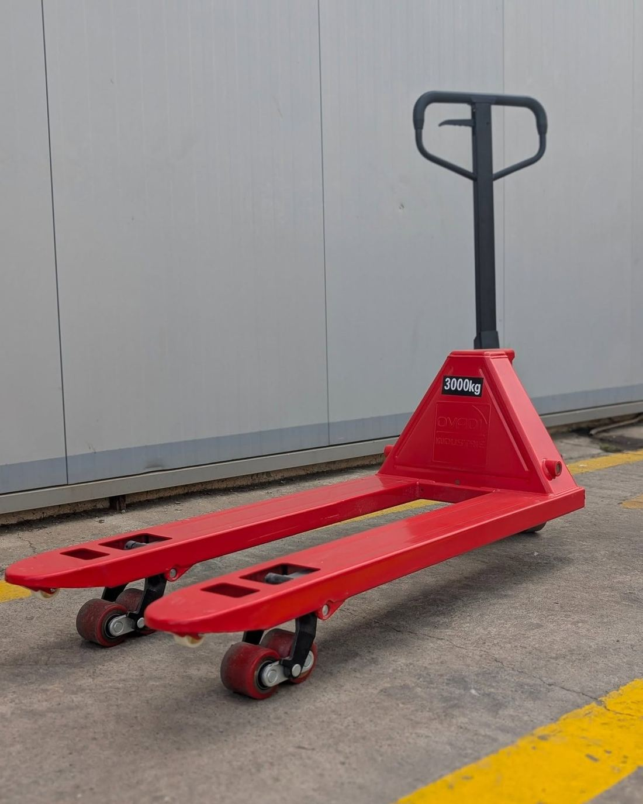
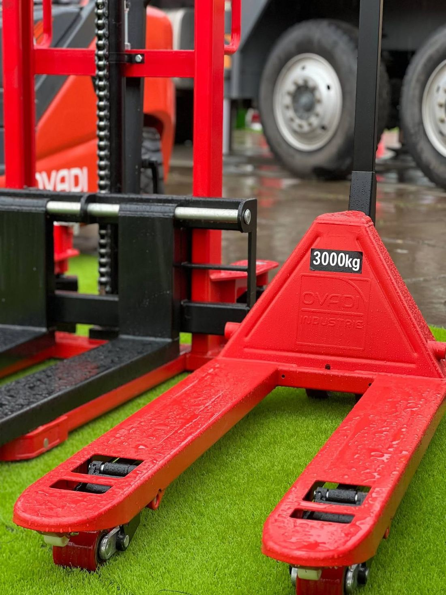
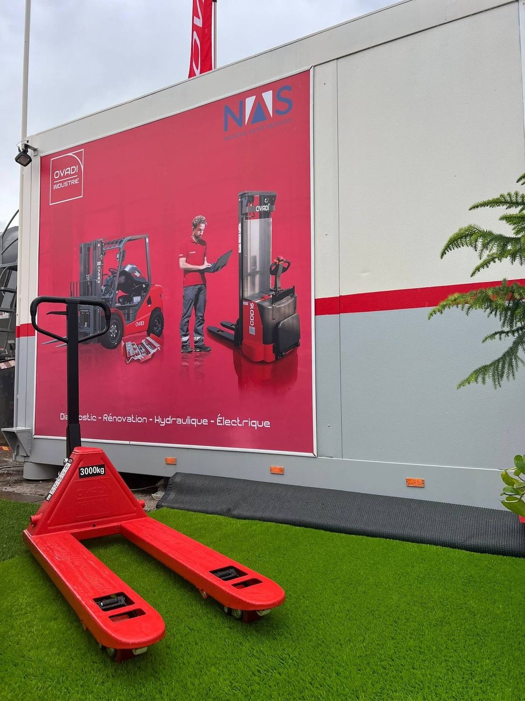

Le classique de l'entrepôt
Caractéristiques à valider par l'administration d'OVADI
Transpalette manuel
Timon ergonomique avec commande de levée, fourches à galets d'entrée et roues directrices : il se glisse sous la palette et la déplace sans effort.
Robuste et simple, c'est l'équipement qu'on retrouve dans chaque dépôt — OVADI le propose avec ses chariots et gerbeurs.
- Fourches rouges, galets d'entrée
- Timon avec levier de commande
- Roues directrices
- Usage intensif en dépôt
| Capacité de charge | À préciser |
| Hauteur de levée | À préciser |
| Longueur des fourches | À préciser |
| Garantie | À préciser |
Le reste
de la gamme.
 01 · Chariots
01 · ChariotsChariot élévateur
Robuste, accessible à l'entretien, pensé pour les quais et les cours d'usine.
 02 · Gerbeurs
02 · GerbeursGerbeur manuel
Pour lever et ranger vos palettes en rayonnage, sans moteur ni recharge.
 03 · Transpalettes
03 · TranspalettesTranspalette manuel
L'outil de base pour déplacer vos palettes du camion au stock.
On lève votre logistique d'un cran.
Un conseiller OVADI vous aide à choisir le bon équipement et vous prépare un devis.